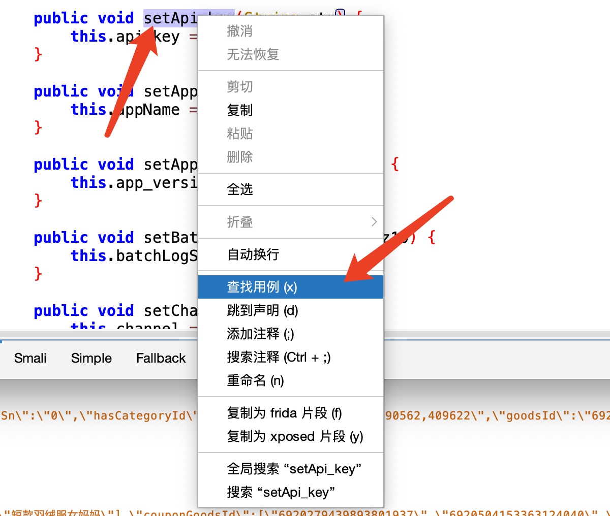
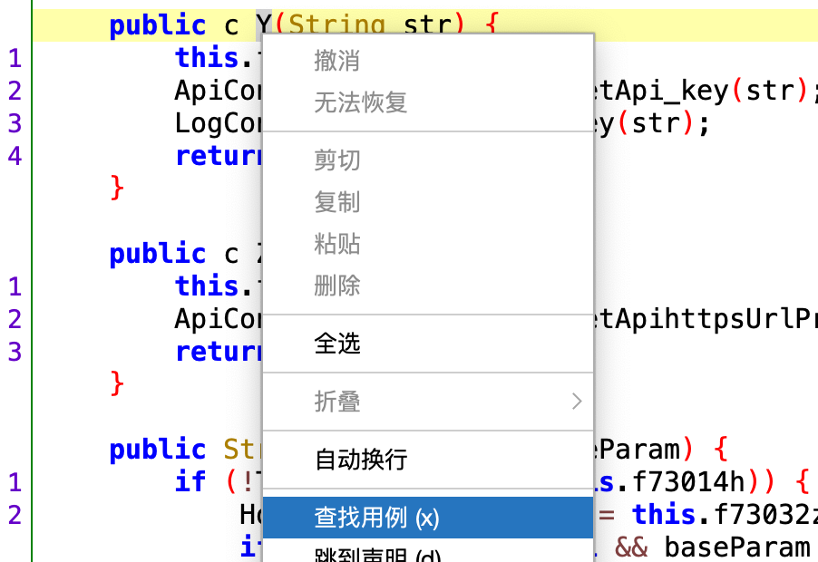
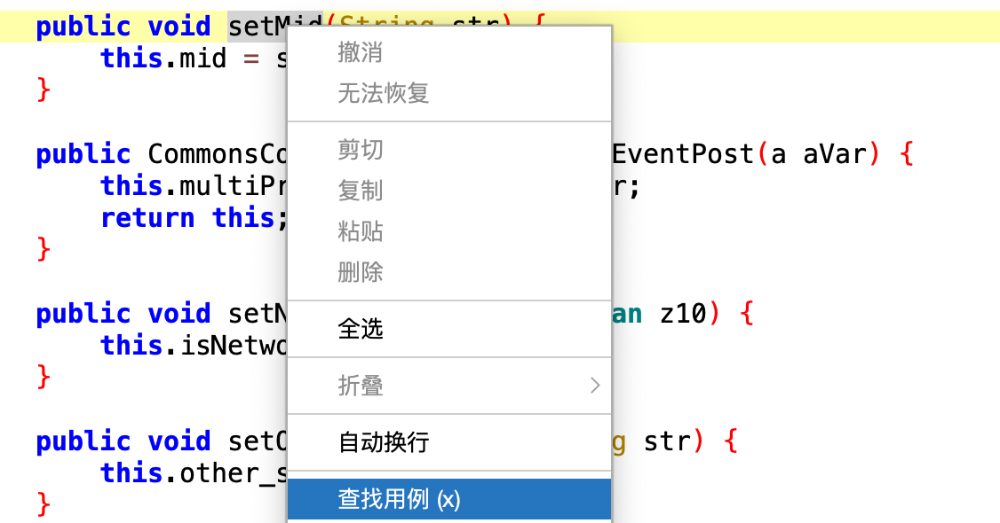
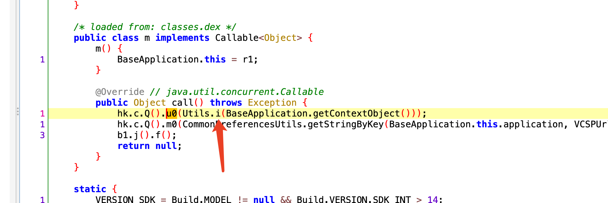
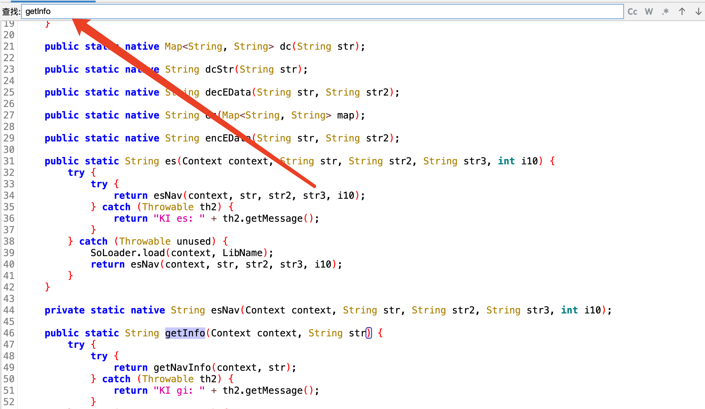
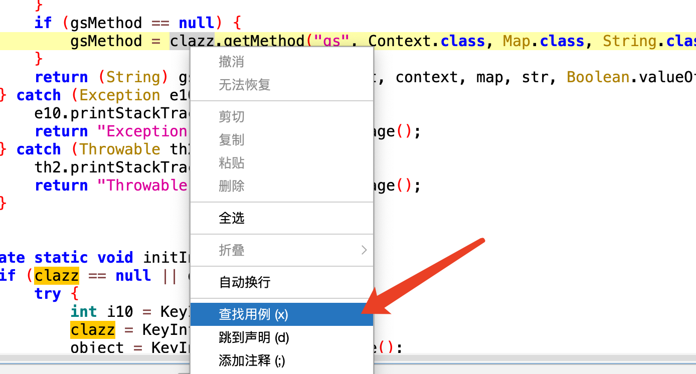
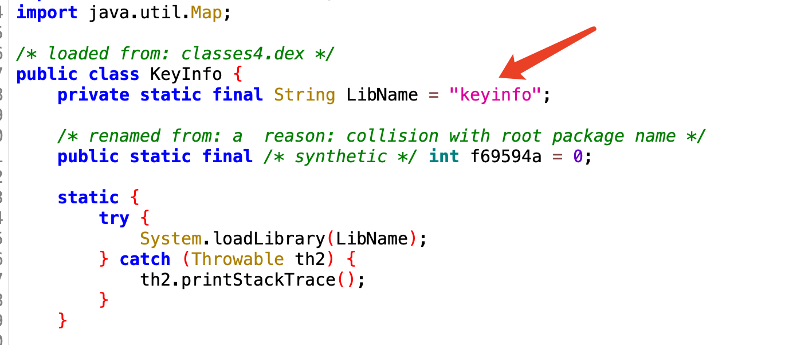
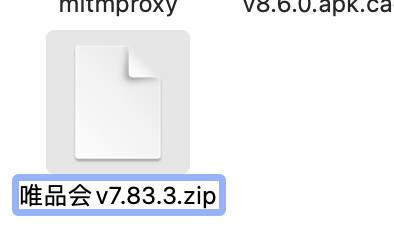

十九、唯品会01
一、今日目标
- 实现唯品会app，按关键字搜索商品功能 两次课（4个接口）
- 版本：v7.83.3
- 知识点：
- so延迟加载
- java的反射
二、抓包分析
1、配置
- 把apk 安装到手机上 adb install 唯品会v7.83.3.apk
- 打开软件，使用charles抓包---》只需要配置代理
- 如果不是第一次安装---》要清理缓存
2、开始抓包商品搜索展示
- 位置
- 找到接口
https://mapi.appvipshop.com/vips-mobile/rest/shopping/search/product/list/v1

接下来，可以在charles中修改请求包，再次发送，将不必要的参数移除，测试发现不能删除，删除后就会提示相关错误，所以，上述参数都需要携带。
- 请求头
:method POST
:path /vips-mobile/rest/shopping/search/product/list/v1
:authority mapi.appvipshop.com
:scheme https
authorization OAuth api_sign=edac34c871e1a025f57697326eaf40a73d62c511
x-vip-host mapi.appvipshop.com
content-type application/x-www-form-urlencoded
content-length 2712
accept-encoding gzip
user-agent okhttp/4.9.1
pragma no-cache
cache-control no-cache
- 请求体
api_key：23e7f28019e8407b98b84cd05b5aef2c # 需要破解 猜 md5，sha1加密
app_name shop_android # 固定的
app_version 7.83.3 #版本号
bigSaleTagIds
brandIds
brandStoreSns
categoryId
channelId 1
channel_flag 0_1
client android
client_type android
darkmode 0
deeplink_cps
device_model Google Pixel 2 XL # 手机型号
did 0.0.5202d48b962cdf462fa581a2726a8c3b.09ec2e # 需要破
elder 0
extParams {"priceVer":"2","mclabel":"1","cmpStyle":"1","statusVer":"2","ic2label":"1","video":"2","uiVer":"2","preheatTipsVer":"4","floatwin":"1","superHot":"1","exclusivePrice":"1","router":"1","coupons":"1","needVideoExplain":"1","rank":"2","needVideoGive":"1","bigBrand":"1","couponVer":"v2","videoExplainUrl":"1","live":"1","sellpoint":"1","reco":"1","vreimg":"1","search_tag":"2","tpl":"1","stdSizeVids":"","labelVer":"2"}
fdc_area_id 103101101109
functions RTRecomm,flagshipInfo,feedback,otdAds,zoneCode,slotOp,survey,hasTabs,floaterParams
harmony_app 0
harmony_os 0
headTabType all
height 2712
isMultiTab 0
keyword 外套女 # 搜索条件
lastPageProperty {"isBgToFront":"0","suggest_text":"外套女","scene_entry_id":"-99","refer_page_id":"page_te_globle_classify_search_1705406858417","text":"外套女","tag":"1","module_name":"com.achievo.vipshop.search","type":"all","typename":"全部","is_back_page":"0"}
maker GOOGLE
mars_cid 8f6c35ee-24b5-3e28-be93-7b0ac7b14331 # 需要破解--》像uuid
mobile_channel oziq7dxw:::
mobile_platform 3
net WIFI
operator
os Android
osv 11
otddid
other_cps
page_id page_te_commodity_search_1705406863729
phone_model pixel 2 xl
priceMax
priceMin
props
province_id 103101
referer com.achievo.vipshop.search.activity.TabSearchProductListActivity
rom Dalvik/2.1.0 (Linux; U; Android 11; Pixel 2 XL Build/RP1A.201005.004.A1)
sd_tuijian 0
service_provider
session_id 8f6c35ee-24b5-3e28-be93-7b0ac7b14331_shop_android_1705407189986 # 需要破
skey 6692c461c3810ab150c9a980d0c275ec # 需要破
sort 0
source app
source_app android
standby_id oziq7dxw:::
sys_version 30
timestamp 1705406863 # 时间戳
union_mark blank&_&blank&_&oziq7dxw:::&_&blank&_&blank
vipService
warehouse VIP_SH # 区域
width 1440 #手机宽度
3、要破解参数
- 上述分析完后，需要破解参数
请求头中：
authorization：OAuth api_sign=41729751cf45a7a935524983da6c9b359589805a
-请求体中：
api_key
did
mars_cid
session_id
skey
-
试改包，去掉几个试试是否可以---》请求头不能去，请求体去掉任意一个都不行
-
大胆猜测：把请求体内容整体加密，加密后放到请求头的authorization中
Invalid API signature 41729751cf45a7a935524983da6c9b359589805a"
- 8多次发送请求尝试
查看要破解的参数是否有固定的--》先去内存中拿--》内存中没有xml中--》生成
api_key # 每次都一样
did # 多次请求也是一样的
mars_cid # 多次是一样的
session_id # mars_cid_shop_android_1705407189986
skey # 多次发送都是一样的
3、反编译app
4、api_key参数 进行逆向
- 搜索api_key
看到有api_key = str; 赋值操作，点进去

- 查看到赋值的代码

- 查看是谁调用了setApi_key进行的赋值


- 看到了传递参数str

- 继续查看函数Y 在哪个位置调用的
点进第一个进行查看


- 点击apikey_vipshop 进行查看

- 找到结果 代码中固定死的

- 重新只搜索当前值 发现可以搜索到

5、did参数
did 搜不到，分析did如何产生？
- 使用java，so生成的---》使用java生成一定能搜到，使用so生成可能搜不到
- 某个请求返回的---》这个请求使用
6、mars_cid
- 搜索mars_cid

- 点击进来后发现是str3参数
继续查找用例


- 没有找到生成的代码
既然当前是获取，那么就会有设置

- 搜索 setMid 看看是否有设置的函数

- 通过包名称发现有点像，点进去

- 查找用例


- 继续查找用例 u0

- 第一个点进去

- 点击查看i函数

- 发现是uuid

注意
以后看到这种格式和长度 第一要想到的是当前为uuid
3d787bd0-42c8-382b-8c32-27bc04b8750f
7、session_id
- 搜索 session_id
发现当前有赋值的代码，点进去查看

- 查看代码

-
发现是由mid、appName、还有毫秒级时间戳拼接到一起的
-
上面我们搜索mars_icd 是由获取mid得到的， mid是由uuid生成的，所以接下来可以进行对比当前是否一致
-
发现都能对应上、那么现在session_id也解决了

8、skey
- 搜索seky 发现数据量太大

- 接下来搜索 &skey

- 第二个有点像 点击进去

- 发现skey的值是由secureKey进行拼接的、而secureKey是由GobalConfig.getSecureKey生成的

- 点击进去

- 发现是由b.f生成的 点击f进去

- 发现返回值是由f2017b返回的，f2017b是KeyInfoFetcher.getInfo生成的，点击getInfo

-
发现了当前是调用keyInfo类中的getInfo函数生成的
-
当前这种调用方式为java反射
-
点击keyInfo类
-
搜索getInfo函数

- 发现最终是so文件中生成的

- 每次获取发现都是固定的（清理缓存以后重新打开App依然是一样的）
9、OAuth api_sign
- 搜索api_sign

- 点进去，发现str是由b函数生成，接下来点进b函数

- 查看a函数

- 查看当前生成函数

- 点击getMapParamsSign 继续查看

- 进来发现是由getSignHash生成，点击进去。继续查看

- 查看gs

- 点进来后发现是java反射、调用gs函数

- 查找用例、看clazz的值是哪个类

- 查找到对应类是 KeyInfo

- 点进进去

-
点击KeyInfo类
-
搜索gs函数

- 发现是调用了gsNav

- 点击gsNav

- 去到顶部，查看当前加载的是哪个so文件、发现是keyinfo.so文件

- 将唯品会App修改后缀为zip

-
解压
-
进行查找keyinfo.so文件

-
用ida打开
-
点击Exports菜单
-
搜索当前函数名 gsNav

-
双击-点进去
-
按下F5
-
加载jni.h
-
在点击

- 点击j_Functions_gs

- 继续点击

- 发现返回的是v48、又是由v54得来的，v54是j_getByteHash函数生成的

- 分析

- 对以上代码进行解释
c
v7 = &dest,
v51 = v50,
v52 = strcpy(&dest, v76),
strcat(v52, v51),
_aeabi_memclr8(&v75, 256),
v53 = strlen(&dest),
(v54 = j_getByteHash((int)v5, v6, (int)&dest, v53, &v75)) != 0)
分析每一行
v7 = &dest,- 将
dest的地址赋值给变量v7。dest可能是一个字符数组或指针，用于存储目标字符串。
- 将
v51 = v50,- 将
v50的值赋值给v51。这里v50和v51的具体含义取决于它们在更大范围内的定义和使用方式，但从上下文来看，v51可能是另一个字符串或数据的一部分。
- 将
v52 = strcpy(&dest, v76),- 使用
strcpy函数将字符串v76复制到dest所指向的位置，并将结果（即&dest）赋值给v52。注意，strcpy返回的是目标字符串的起始地址，因此v52实际上与v7相同。
- 使用
strcat(v52, v51),- 使用
strcat函数将v51表示的字符串追加到v52指向的字符串末尾。由于v52和v7都是指向dest，这实际上是在dest中拼接两个字符串。
- 使用
_aeabi_memclr8(&v75, 256),- 调用
_aeabi_memclr8函数清除v75所指向的 256 字节内存区域。这个函数通常用于初始化一块内存为零。_aeabi_memclr8是 ARM EABI (Embedded Application Binary Interface) 标准中的一个内存清除函数。
- 调用
v53 = strlen(&dest),- 计算
dest的长度（不包括结尾的空字符\0），并将结果赋值给v53。
- 计算
(v54 = j_getByteHash((int)v5, v6, (int)&dest, v53, &v75)) != 0)- 调用名为
j_getByteHash的函数，传入五个参数： (int)v5: 可能是某种转换后的环境指针或句柄。v6: 可能是其他输入数据或标识符。(int)&dest: 目标字符串的地址。v53: 目标字符串的长度。&v75: 已经被清零的 256 字节缓冲区。j_getByteHash函数返回的结果赋值给v54。- 最后检查
j_getByteHash的返回值是否不等于 0。
- 调用名为
整体逻辑
- 这段代码的主要目的是构造一个新的字符串（通过复制和拼接），然后对这个新字符串进行某种形式的哈希运算。
j_getByteHash函数似乎负责执行具体的哈希算法，并且它的行为依赖于传入的参数，特别是dest和v75。-
如果
j_getByteHash成功并且返回非零值，则整个表达式的条件部分为真；否则为假。 -
点击j_getByteHash函数
-
发现返回的是getByteHash函数

-
继续点击getByteHash函数
-
看到了sha1算法

-
则返回上一层getByteHash函数
-
也就是说，我们hook getByteHash函数就能知道当前是如何加密
-
hook代码
```java Java.perform(function () { // 参数1 为hook的so文件 参数2为hook-so文件中的哪个函数 var addr_func = Module.findExportByName("libkeyinfo.so", "getByteHash"); Interceptor.attach(addr_func, { // 打印执行时候的传递的参数 onEnter: function(args){ console.log("--------------------------执行函数--------------------------"); console.log("参数2：", args[2]); this.x1 = args[2]; }, // 打印执行结束时候的返回值 onLeave: function(retValue){ // 执行完后x1的值在内存中进行查看 console.log(Memory.readCString(this.x1)); console.log("返回值:", retValue.readUtf8String()); }
})
});
//frida -UF -l 2-hook-so.js -o 2-hook-so.text ```
- Charles中的 api_sign

- hook到的

- 结论
当前是由aee4c425dbb2288b80c71347cc37d04拼接请求体中参数

进行了sha1加密，结果又作为参数aee4c425dbb2288b80c71347cc37d04拼接sha1加密后的值
进行了二次加密，得到了最终携带的结果8095a0f8dfa7960beb88355ff46c9f7d45116ef0
三、 调整顺序
1、分析请求
请求之前的关系：
# 注册设备
APP第一次打开，设备注册
- 向后端发送请求，后端返回token，保存，其他请求携带。
- 向后端发送请求+生成token，发送后端，授权，后续其他请求。
注意：有些app卸载
https://mp.appvipshop.com/apns/device_reg
# getTokenByFP
https://vcsp-api.vip.com/token/getTokenByFP
# generate_token
https://mapi.appvipshop.com/vips-mobile/rest/device/generate_token
- 请求头：authorization: OAuth api_sign=2cc09d0c582a601d57548dadea3a87878fd4e176
- 请求体：
api_key
edata（会用到getTokenByFP返回的vcspToken 和 请求传递的vcspKey）
skey
- 响应：
"did": "0.0.f5bb01a00a0871e0c5d670abbacda7d9.c75f2a",
# 搜索
https://mapi.appvipshop.com/vips-mobile/rest/shopping/search/product/list/v1
# 1 请求头中不能删
authorization OAuth api_sign=bf46ad824c4e372c310a5fd5091e1319de413049
# 2 一旦删除请求体中任意一个东西，验证就不通过了
-猜测，有个秘钥是对整个请求头加了密做了一个签名
-api_key 固定
-skey 固定
-mars_cid uuid
-session_id uuid+时间
-对请求体整体加密后做成了authorization的值
# 3 did:找不到
-did的生成：
-有可能代码生成
-发送某个请求，返回的：https://mapi.appvipshop.com/vips-mobile/rest/device/generate_token
# 4 authorization：加密得到的
# 破解请求顺序
# 1 https://mp.appvipshop.com/apns/device_reg
-注册设备
-一般app都会有这个接口，第一次运行，注册设备接口
#2 https://vcsp-api.vip.com/token/getTokenByFP?vcspKey=4d9e524ad536c03ff203787cf0dfcd29
-生成edata，必须先调用
-该请求返回了一个vcspToken，生成的edata
#3 generate_token 返回did，给搜索接口用
https://mapi.appvipshop.com/vips-mobile/rest/device/generate_token
# 请求体：
api_key 23e7f28019e8407b98b84cd05b5aef2c # 固定
did
edata 很多很多东西---》可能是返回的，可能是代码生成的---》一个接口返回的数据+代码生成
eversion 0
skey 6692c461c3810ab150c9a980d0c275ec# 固定
timestamp 1692706244 # 时间戳
#4 搜索接口
https://mapi.appvipshop.com/vips-mobile/rest/shopping/search/product/list/v1
2、逆向地址
- 注册设备（好多App需要先注册设备才能进行后续的请求）
https://mp.appvipshop.com/apns/device_reg
- 参数vcspToken（生成edata的数据）
https://vcsp-api.vip.com/token/getTokenByFP
- 参数did
https://mapi.appvipshop.com/vips-mobile/rest/device/generate_token
- 商品列表
https://mapi.appvipshop.com/vips-mobile/rest/shopping/search/product/list/v1
注意
搜索---》抓包 -抓到包---》这个包需要携带很多数据(请求头，请求体)---》有一部分是之前别的请求返回的数据 -找之前请求--》app装好后第一次打开，这几个请求才会有(清空缓存)
四、注册设备device_reg（上面已经逆向过）
1、图例

# 请求地址
https://mp.appvipshop.com/apns/device_reg
# 请求方式
get
# 请求参数
device_token：a9d1a2b9-2a79-36fd-a8ca-cbe24c03979d
skey：6692c461c3810ab150c9a980d0c275ec
# 请求头：
authorization：OAuth api_sign=bd16242e8738370e6ea310dad1ff92d49c181040
## 注意：
请求头的authorization删除再发送包，也可以成功，但是后续会有用，我们要继续逆向
请求体的：skey也可以不携带
2、逆向 device_token（上面逆向的商品展示和当前一样）
# 1 反编译apk---搜索：device_token
# 2 搜到很多：随便点开一个看，最后都是到了一个位置
# 3 找到位置：
sb2.append("&device_token=");
sb2.append(c.Q().m());
# 4 查看 c.Q().m()
public String m() {
if (TextUtils.isEmpty(this.f73030x)) {
MyLog.debug(c.class, "mid isEmpty!!!!!!");
}
return this.f73030x; # 从内存中拿的，看谁赋值的
}
# 5 查看谁赋值了this.f73030x
# 找到了赋值位置---》1 打印调用栈 2 查找用例
public c u0(String str) {
this.f73030x = str;
CommonsConfig.getInstance().setMid(str);
ApiConfig.getInstance().setMid(str);
LogConfig.self().setMid(str);
return Q();
}
# 6 查找用例找到很多，随便看一个---》其他的最终也是到了一个位置
public Object call() throws Exception {
hk.c.Q().u0(Utils.i(BaseApplication.getContextObject()));
b1.j().f();
return null;
}
# 7 查看：Utils.i
public static String i(Context context) {
if (CommonsConfig.getInstance().isPreviewModel) {
return hk.c.Q().m();
}
if (p(f39524g)) {
String stringByKey = CommonPreferencesUtils.getStringByKey(context, CommonsConfig.VIP_MID_KEY);
f39524g = stringByKey;
if (p(stringByKey) || DeviceUuidFactory.ANDROIDID_000000000_MID.equals(f39524g)) {
String uuid = DeviceUuidFactory.getDeviceUuid(context).toString();
f39524g = uuid;
if (p(uuid)) {
f39524g = UUID.randomUUID().toString();# 使用uuid生成的
CommonPreferencesUtils.addConfigInfo(context, CommonsConfig.MID_TYPE_KEY, "3");
}
CommonPreferencesUtils.addConfigInfo(context, CommonsConfig.VIP_MID_KEY, f39524g);
}
}
return f39524g;
}
# 8 多次抓包分析---》这个值不变--》生成方案
1 hk.c.Q().m()---》找过了已经，从内存中拿
2 String uuid = DeviceUuidFactory.getDeviceUuid(context).toString();
还可以用uuid
3 uuid # 直接使用uuid即可
# 9 最终确定：device_token 就是uuid
-一旦生成，以后都用这个uuid作为设备唯一id
-放在了内存和xml中，以后都是去内存和xml中取
# 10 device_token就是uuid


3、 破解过程
# 1 反编译--搜索---》 device_token---》很多
# 2 搜索出11个，不确定那个，随便看几个---》最终发现，殊途同归---》都是uuid
# 3 看第一个
sb2.append(s.b.f83866a);
sb2.append("?ordersn=");
sb2.append(str);
sb2.append("&device_token=");
sb2.append(c.Q().m());
# 4 c.Q().m()--》查找声明
public String m() {
if (TextUtils.isEmpty(this.f73030x)) {
MyLog.debug(c.class, "mid isEmpty!!!!!!");
}
return this.f73030x;
}
# 5 找 this.f73030x 在哪赋值的
public c u0(String str) {
this.f73030x = str; # 在这里赋值
CommonsConfig.getInstance().setMid(str);
ApiConfig.getInstance().setMid(str);
LogConfig.self().setMid(str);
return Q();
}
# 6 谁调用了u0： hook打印调用栈 查找用例
# 7 查找用例：有很多，大致有两类---》随便看---》最终 都是一个位置
-一类是：uui
-一类是：Utils.i 生成的
# 8 随便看第一个：
hk.c.Q().u0(Utils.i(BaseApplication.getContextObject()));
# 9 Utils.i：先去xml中找，找不到--》生成 安卓uuid---》还没生成就随机生成uuid
public static String i(Context context) {
if (CommonsConfig.getInstance().isPreviewModel) {
return hk.c.Q().m();
}
if (p(f39524g)) {
String stringByKey = CommonPreferencesUtils.getStringByKey(context, CommonsConfig.VIP_MID_KEY);
f39524g = stringByKey;
if (p(stringByKey) || DeviceUuidFactory.ANDROIDID_000000000_MID.equals(f39524g)) {
String uuid = DeviceUuidFactory.getDeviceUuid(context).toString();
f39524g = uuid;
if (p(uuid)) {
f39524g = UUID.randomUUID().toString(); # 随机生成uuid
CommonPreferencesUtils.addConfigInfo(context, CommonsConfig.MID_TYPE_KEY, "3");
}
CommonPreferencesUtils.addConfigInfo(context, CommonsConfig.VIP_MID_KEY, f39524g);
}
}
return f39524g;
}
# 9 使用随机生成的uuid测试---》发现可以
# 10 代码模拟：uuid
import uuid
device_token = str(uuid.uuid4())
4、python 还原device_token
import uuid
device_token = str(uuid.uuid4())
5、 绕过frida调试
import frida
# 获取设备信息
rdev = frida.get_remote_device()
# 枚举所有的进程
processes = rdev.enumerate_processes()
for process in processes:
print(process)
# 获取在前台运行的APP
front_app = rdev.get_frontmost_application()
print(front_app)
# Application(identifier="com.achievo.vipshop", name="唯品会", pid=22907, parameters={})
### hook运行了那些so
import frida
import sys
rdev = frida.get_remote_device()
pid = rdev.spawn(["com.achievo.vipshop"])
session = rdev.attach(pid)
scr = """
Java.perform(function () {
var dlopen = Module.findExportByName(null, "dlopen");
var android_dlopen_ext = Module.findExportByName(null, "android_dlopen_ext");
Interceptor.attach(dlopen, {
onEnter: function (args) {
var path_ptr = args[0];
var path = ptr(path_ptr).readCString();
console.log("[dlopen:]", path);
},
onLeave: function (retval) {
}
});
Interceptor.attach(android_dlopen_ext, {
onEnter: function (args) {
var path_ptr = args[0];
var path = ptr(path_ptr).readCString();
console.log("[dlopen_ext:]", path);
},
onLeave: function (retval) {
}
});
});
"""
script = session.create_script(scr)
def on_message(message, data):
print(message, data)
script.on("message", on_message)
script.load()
rdev.resume(pid)
sys.stdin.read()
# /data/app/~~PYR1rBhukSZcT4B2KQ_VDw==/com.achievo.vipshop-LBTKI1qDnOWh1s-aZDbLIA==/lib/arm/libmsaoaidsec.so
6、 hook--gsNav-看入参和返回值
# 清除一下数据
import frida
import sys
rdev = frida.get_remote_device()
session = rdev.attach("唯品会")
scr = """
Java.perform(function () {
var KeyInfo = Java.use("com.vip.vcsp.KeyInfo");
var TreeMap = Java.use('java.util.TreeMap');
KeyInfo.gsNav.implementation = function (ctx, map,str,z10) {
console.log("-----------------gsNav-----------------");
console.log("参数==>", Java.cast(map,TreeMap).toString());
console.log("参数==>", str);
console.log("参数==>", z10);
var res = this.gsNav(ctx, map,str,z10);
console.log("返回的值==>", res);
return res;
}
});
"""
script = session.create_script(scr)
def on_message(message, data):
print(message, data)
script.on("message", on_message)
script.load()
sys.stdin.read()
'''
1 根据抓包抓到的 OAuth api_sign=bd16242e8738370e6ea310dad1ff92d49c181040 搜索
2 如下
###这些参数就是device_reg这个请求拼出来一些参数，基本都是固定的
参数==> {app_name=achievo_ad, app_version=7.83.3, channel=oziq7dxw:::, device=Pixel 2 XL, device_token=a9d1a2b9-2a79-36fd-a8ca-cbe24c03979d, manufacturer=Google, os_version=30, regPlat=0, regid=null, rom=Dalvik/2.1.0 (Linux; U; Android 11; Pixel 2 XL Build/RP1A.201005.004.A1), skey=6692c461c3810ab150c9a980d0c275ec, status=1, vipruid=, warehouse=null}
参数==> null
参数==> false
返回的值==> bd16242e8738370e6ea310dad1ff92d49c181040
'''
7、3libkeyinfo.so--》静态注册
# 1 我们去so文件中找 libkeyinfo.so
public class KeyInfo {
private static final String LibName = "keyinfo";
static {
System.loadLibrary(LibName);
}
# 2 打开32为的IDA，将so文件拖入
# 3 搜索java_xxx_gsNav
# 4 load 头文件，代码如下，返回了v9，所以我们看v9怎么来的
int __fastcall Java_com_vip_vcsp_KeyInfo_gsNav(JNIEnv_ *a1, int a2, int a3, int a4, int a5, int a6)
{
int v9; // r5
if ( j_Utils_ima(a1, a2, a3) )
v9 = j_Functions_gs(a1, a2, a4, a5, a6);
else
v9 = 0;
j_Utils_checkJniException(a1);
return v9;
}
# 5 j_Functions_gs(a1, a2, a4, a5, a6)得到v9，双击查看
int __fastcall j_Functions_gs(int a1, int a2, int a3, int a4, int a5)
{
return Functions_gs(a1, a2, a3, a4, a5);
}
# 6 继续双击查看---倒着看
jstring __fastcall Functions_gs(JNIEnv_ *a1, int a2, int a3, int a4, int a5){
#。。。很多代码。。。
v55 = j_getByteHash(a1, a2, v30, v16, v80, 256);
if ( v55
&& (v56 = (const char *)v55,
v57 = strcpy(v79, dest),
strcat(v57, v56),
memset(v80, 0, sizeof(v80)),
v58 = strlen(v79), #v58是一个长度，所以v79是个字符串
(v59 = (const char *)j_getByteHash(a1, a2, v79, v58, v80, 256)) != 0) )# 3 v59在此处生成
{
v53 = a1->functions->NewStringUTF(a1, v59); # 2 通过v59字符串生成的
}
else
{
v53 = 0;
}
free(v30);
return v53; # 1 返回了v53
}
}
# 7 继续查看j_getByteHash
int __fastcall j_getByteHash(int a1, int a2, int a3, int a4, int a5, int a6)
{
return getByteHash(a1, a2, a3, a4, a5);
}
# 8 继续查看 getByteHash(a1, a2, a3, a4, a5)---》猜测可能用了sha1加密
char *__fastcall getByteHash(JNIEnv_ *a1, int a2, int a3, int a4, char *a5)
{
j_SHA1Reset(v12);
j_SHA1Input(v12, a3, a4);
if ( j_SHA1Result(v12) )
return v7;
}
#9 我们hook--getByteHash--查看参数和返回值--》第二个位置的参数是v79


8、Hook getByteHash的参数和返回值
// 去内存中中 libkeyinfo.so getByteHash
var addr = Module.findExportByName("libkeyinfo.so", "getByteHash");
console.log(addr); //0xb696387d
Interceptor.attach(addr,{
onEnter:function (args){
this.x1 = args[2];
},
onLeave:function(retval) {
console.log("--------------------")
console.log(Memory.readCString(this.x1));
console.log(Memory.readCString(retval));
}
})
// frida -U -f com.achievo.vipshop -l hook04.js 重启app+hook（出问题）
// frida -UF -l hook04.js 手动启动+hook


1.手动Hook
# 1 hook 脚本写好了--》app清数据
1 如果在app运行之前运行---attach方案--》由于app没运行--》脚本运行就报错
2 如果运行起app---》如果脚本起慢了---》注册设备执行完了，就hook不到
3 如果脚本起快了---》app还没运行---》脚本会报错
4 脚本运行时机非常重要
# 2 这个hook脚本，必须要用attach方法--》等待so加载到内存再执行，太早太晚都不行

点击同意时，立即开始Hook。
// 删除数据，重启，点了同意，里面启动脚本，把握时机，如果太早，so文件没加载，如果太晚，代码执行完了，不好控制
// 去内存中中 libkeyinfo.so getByteHash
var addr = Module.findExportByName("libkeyinfo.so", "getByteHash");
console.log(addr);
Interceptor.attach(addr,{
onEnter:function (args){
this.x1 = args[2];
},
onLeave:function(retval) {
console.log("--------------------")
console.log(Memory.readCString(this.x1));
console.log(Memory.readCString(retval));
}
})
// frida -UF -l hook04.js 手动启动+hook
// 通过抓包抓到的返回值去搜索
/*
--------------------
aee4c425dbb2288b80c71347cc37d04bapp_name=achievo_ad&app_version=7.83.3&channel=oziq7dxw:::&device=Pixel 2 XL&device_token=a9d1a2b9-2a79-36fd-a8ca-cbe24c03979d&manufacturer=Google&os_version=30®Plat=0®id=null&rom=Dalvik/2.1.0 (Linux; U; Android 11; Pixel 2 XL Build/RP1A.201005.004.A1)&skey=6692c461c3810ab150c9a980d0c275ec&status=1&vipruid=&warehouse=VIP_SH
f5fb31c0c3081d18c3f15c193e6f0c3868ae8d14
--------------------
aee4c425dbb2288b80c71347cc37d04b f5fb31c0c3081d18c3f15c193e6f0c3868ae8d14
f4f002d40e112a06ecdc04e54d5bf9c92c0477aa
--------------------
###我们发现aee4c425dbb2288b80c71347cc37d04b是一样的，可以猜测，这就是sha1算法的盐
*/
2.延迟Hook
function do_hook() {
setTimeout(function(){
var addr = Module.findExportByName("libkeyinfo.so", "getByteHash");
console.log(addr); //0xb696387d
Interceptor.attach(addr, {
onEnter: function (args) {
this.x1 = args[2];
},
onLeave: function (retval) {
console.log("--------------------")
console.log(Memory.readCString(this.x1));
console.log(Memory.readCString(retval));
}
})
},10);
}
function load_so_and_hook() {
var dlopen = Module.findExportByName(null, "dlopen");
var android_dlopen_ext = Module.findExportByName(null, "android_dlopen_ext");
Interceptor.attach(dlopen, {
onEnter: function (args) {
var path_ptr = args[0];
var path = ptr(path_ptr).readCString();
// console.log("[dlopen:]", path);
this.path = path;
}, onLeave: function (retval) {
if (this.path.indexOf("libkeyinfo.so") !== -1) {
console.log("[dlopen:]", this.path);
do_hook();
}
}
});
Interceptor.attach(android_dlopen_ext, {
onEnter: function (args) {
var path_ptr = args[0];
var path = ptr(path_ptr).readCString();
this.path = path;
}, onLeave: function (retval) {
if (this.path.indexOf("libkeyinfo.so") !== -1) {
console.log("\nandroid_dlopen_ext加载：", this.path);
do_hook();
}
}
});
}
load_so_and_hook();
// frida -U -f com.achievo.vipshop -l hook05.js
9、测试OK
import hashlib
data_string ="aee4c425dbb2288b80c71347cc37d04bapp_name=achievo_ad&app_version=7.83.3&channel=oziq7dxw:::&device=Pixel 2 XL&device_token=a9d1a2b9-2a79-36fd-a8ca-cbe24c03979d&manufacturer=Google&os_version=30®Plat=0®id=null&rom=Dalvik/2.1.0 (Linux; U; Android 11; Pixel 2 XL Build/RP1A.201005.004.A1)&skey=6692c461c3810ab150c9a980d0c275ec&status=1&vipruid=&warehouse=VIP_SH"
# sha1加密
hash_object = hashlib.sha1()
hash_object.update(data_string.encode('utf-8'))
arg7 = hash_object.hexdigest()
print(arg7) # f5fb31c0c3081d18c3f15c193e6f0c3868ae8d14
x = "aee4c425dbb2288b80c71347cc37d04b"+arg7
# sha1加密
hash_object = hashlib.sha1()
hash_object.update(x.encode('utf-8'))
arg7 = hash_object.hexdigest()
print(arg7) # f4f002d40e112a06ecdc04e54d5bf9c92c0477aa 跟hook出来的一样
10、代码整合(不带authorization)
import requests
import uuid
import hashlib
def sha1(data_string):
# sha1加密
hash_object = hashlib.sha1()
hash_object.update(data_string.encode('utf-8'))
arg7 = hash_object.hexdigest()
return arg7
device_token = str(uuid.uuid4())
param_dict = {
'app_name': 'achievo_ad',
'app_version': '7.83.3',
'device_token': device_token,
'status': 1,
'warehouse': 'null',
'manufacturer': 'Google',
'device': 'Pixel 2 XL',
'os_version': '30',
'channel': 'oziq7dxw:::',
'vipruid': '',
'regPlat': '0',
'regid': '',
'rom': 'Dalvik/2.1.0 (Linux; U; Android 11; Pixel 2 XL Build/RP1A.201005.004.A1)',
'skey': '6692c461c3810ab150c9a980d0c275ec',
}
ordered_string = "&".join(["{}={}".format(key, param_dict[key]) for key in sorted(param_dict.keys())])
salt = "aee4c425dbb2288b80c71347cc37d04b"
tmp = sha1(f"{salt}{ordered_string}")
api_sign = sha1(f"{salt}{tmp}")
res = requests.get(
url="https://mp.appvipshop.com/apns/device_reg",
params=param_dict,
headers={
# "Authorization": "OAuth api_sign={}".format(api_sign)
},
verify=False
)
print(res.text)
11、代码整合(带authorization)
import requests
import uuid
import hashlib
def sha1(data_string):
# sha1加密
hash_object = hashlib.sha1()
hash_object.update(data_string.encode('utf-8'))
arg7 = hash_object.hexdigest()
return arg7
device_token = str(uuid.uuid4())
param_dict = {
'app_name': 'achievo_ad',
'app_version': '7.83.3',
'device_token': device_token,
'status': 1,
'warehouse': 'null',
'manufacturer': 'Google',
'device': 'Pixel 2 XL',
'os_version': '30',
'channel': 'oziq7dxw:::',
'vipruid': '',
'regPlat': '0',
'regid': '',
'rom': 'Dalvik/2.1.0 (Linux; U; Android 11; Pixel 2 XL Build/RP1A.201005.004.A1)',
'skey': '6692c461c3810ab150c9a980d0c275ec',
}
ordered_string = "&".join(["{}={}".format(key, param_dict[key]) for key in sorted(param_dict.keys())])
salt = "aee4c425dbb2288b80c71347cc37d04b"
tmp = sha1(f"{salt}{ordered_string}")
api_sign = sha1(f"{salt}{tmp}")
res = requests.get(
url="https://mp.appvipshop.com/apns/device_reg",
params=param_dict,
headers={
"Authorization": "OAuth api_sign={}".format(api_sign)
},
verify=False
)
print(res.text)
五、getTokenByFP
参数vcspToken（生成edata的数据）
https://vcsp-api.vip.com/token/getTokenByFP
1、图例

2、 vcspKey破解
在之前搞skey的Hook时，其实也获取到vcspKey，其实就是一个固定值。
设备1：
-----------------
参数==> app_name
返回的值==> shop_android
-----------------
参数==> vcsp_key
返回的值==> 4d9e524ad536c03ff203787cf0dfcd29
-----------------
参数==> api_key
返回的值==> 23e7f28019e8407b98b84cd05b5aef2c
-----------------
参数==> skey
返回的值==> 6692c461c3810ab150c9a980d0c275ec
-----------------
参数==> skey
返回的值==> 6692c461c3810ab150c9a980d0c275ec
设备2：
-----------------
参数==> app_name
返回的值==> shop_android
-----------------
参数==> vcsp_key
返回的值==> 4d9e524ad536c03ff203787cf0dfcd29
-----------------
参数==> api_key
返回的值==> 23e7f28019e8407b98b84cd05b5aef2c
-----------------
参数==> skey
返回的值==> 6692c461c3810ab150c9a980d0c275ec
-----------------
参数==> skey
返回的值==> 6692c461c3810ab150c9a980d0c275ec
3、vcspauthorization
因为vcspKey都是固定的，所以通过sha1加密后，每次vcspauthorization也是固定的
因为：多次请求发现是固定 + 在请求中参数中只有固定的vcspKey（固定），所以，得到的结果理应固定。
4、代码
import requests
res = requests.get(
url="https://vcsp-api.vip.com/token/getTokenByFP?vcspKey=4d9e524ad536c03ff203787cf0dfcd29",
headers={
"vcspauthorization": "vcspSign=05a68135d2bfd322e3a22f95bbc25a24c777f387"
}
)
print(res.text)
5、逆向【可选】
搜索：vcspauthorization


后续执行过程与注册设备相同（参数不同而已）。
6、hook
function do_hook() {
var addr = Module.findExportByName("libkeyinfo.so", "getByteHash");
console.log(addr); //0xb696387d
Interceptor.attach(addr, {
onEnter: function (args) {
this.x1 = args[2];
},
onLeave: function (retval) {
console.log("--------------------")
console.log(Memory.readCString(this.x1));
console.log(Memory.readCString(retval));
}
})
}
function load_so_and_hook() {
var dlopen = Module.findExportByName(null, "dlopen");
var android_dlopen_ext = Module.findExportByName(null, "android_dlopen_ext");
Interceptor.attach(dlopen, {
onEnter: function (args) {
var path_ptr = args[0];
var path = ptr(path_ptr).readCString();
// console.log("[dlopen:]", path);
this.path = path;
}, onLeave: function (retval) {
if (this.path.indexOf("libkeyinfo.so") !== -1) {
console.log("[dlopen:]", this.path);
do_hook();
}
}
});
Interceptor.attach(android_dlopen_ext, {
onEnter: function (args) {
var path_ptr = args[0];
var path = ptr(path_ptr).readCString();
this.path = path;
}, onLeave: function (retval) {
if (this.path.indexOf("libkeyinfo.so") !== -1) {
console.log("\nandroid_dlopen_ext加载：", this.path);
do_hook();
}
}
});
}
load_so_and_hook();
// frida -U -f com.achievo.vipshop -l delay_hook.js
// 根据抓包抓到的数据，去搜索
7、验证
--------------------
da19a1b93059ff3609fc1ed2e04b0141vcspKey=4d9e524ad536c03ff203787cf0dfcd29
5a7c831821536f5a9d5244b99af681226dc8a277
--------------------
da19a1b93059ff3609fc1ed2e04b01415a7c831821536f5a9d5244b99af681226dc8a277
05a68135d2bfd322e3a22f95bbc25a24c777f387
--------------------
import hashlib
data_string ="da19a1b93059ff3609fc1ed2e04b0141vcspKey=4d9e524ad536c03ff203787cf0dfcd29"
# sha1加密
hash_object = hashlib.sha1()
hash_object.update(data_string.encode('utf-8'))
arg7 = hash_object.hexdigest()
print(arg7) # 5a7c831821536f5a9d5244b99af681226dc8a277
x = "da19a1b93059ff3609fc1ed2e04b0141"+arg7
# sha1加密
hash_object = hashlib.sha1()
hash_object.update(x.encode('utf-8'))
arg7 = hash_object.hexdigest()
print(arg7)#05a68135d2bfd322e3a22f95bbc25a24c777f387